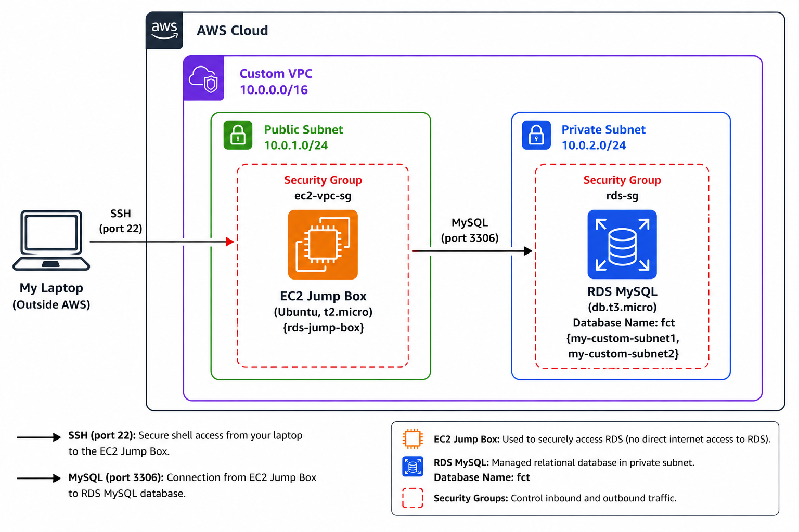
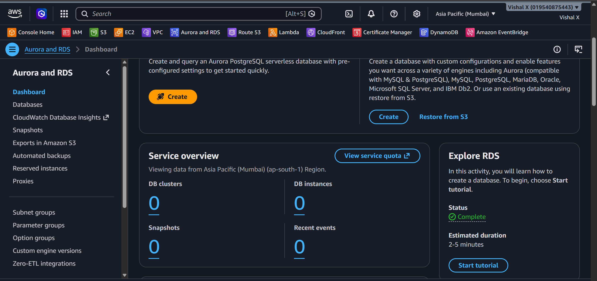
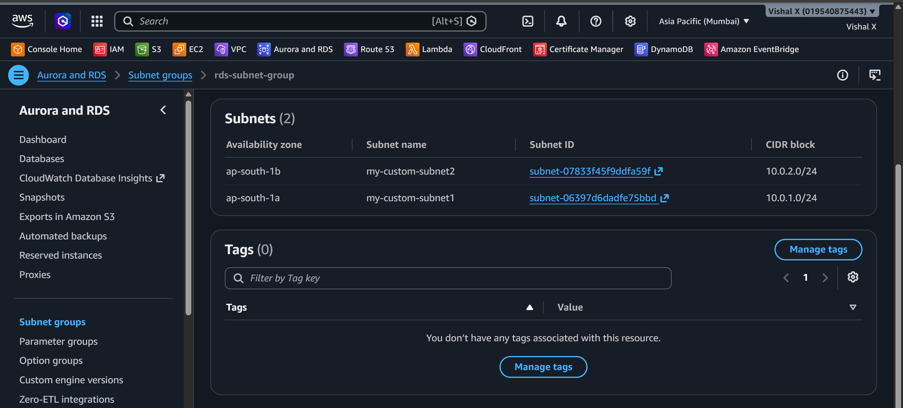
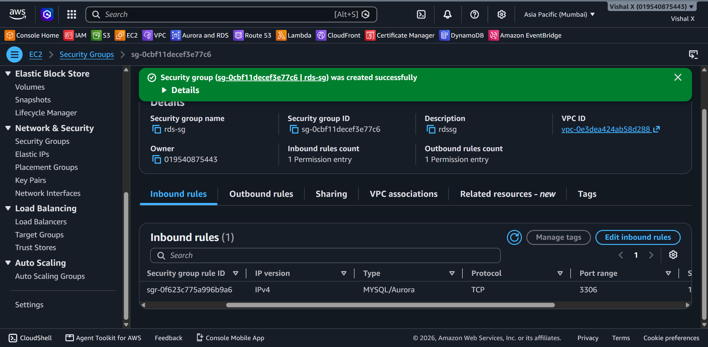
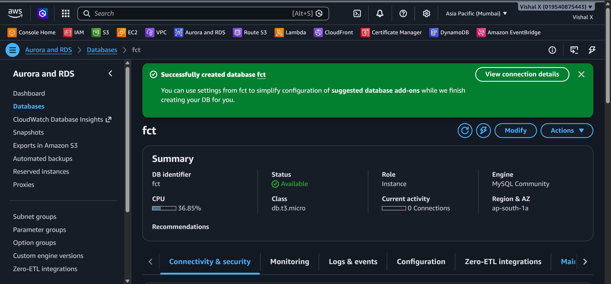
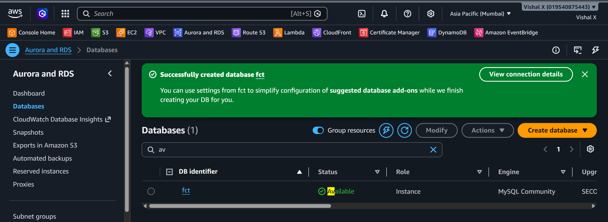
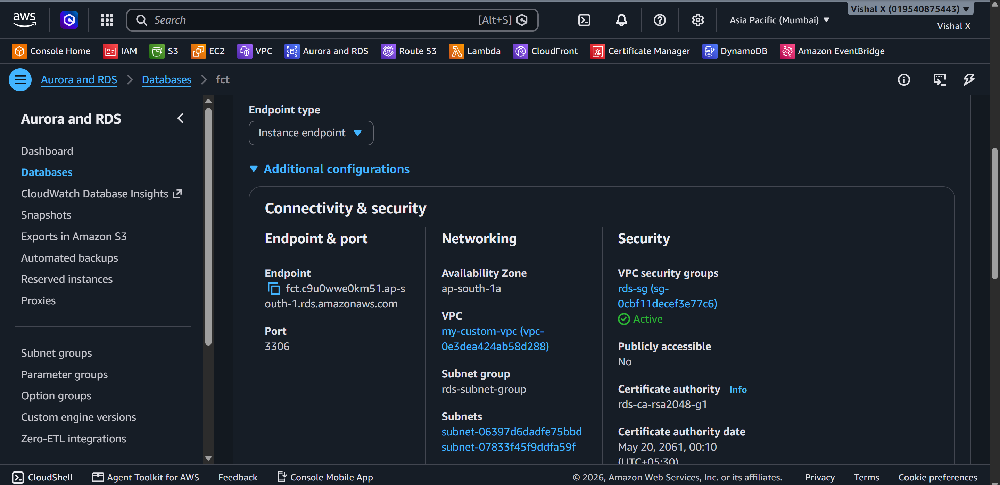
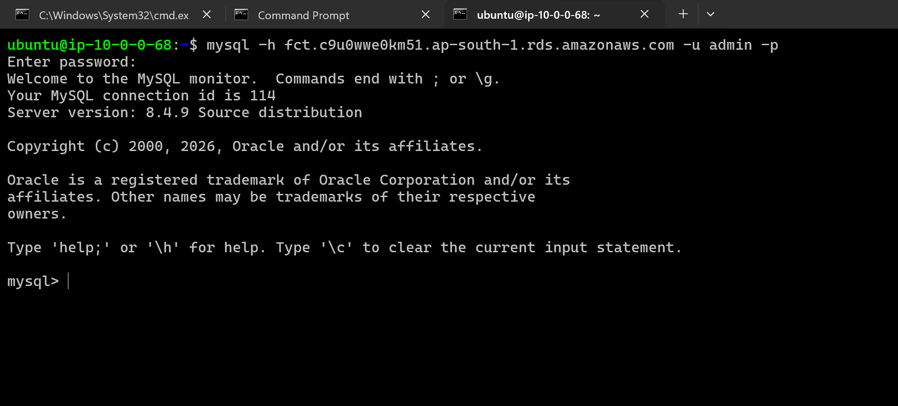
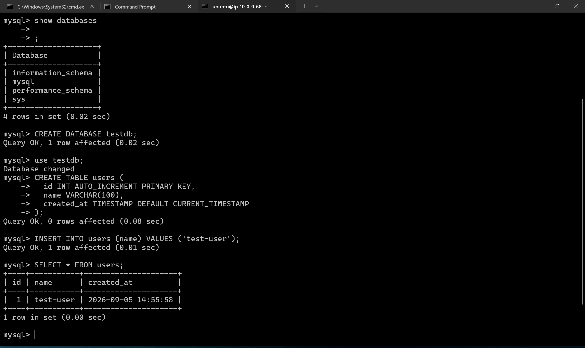
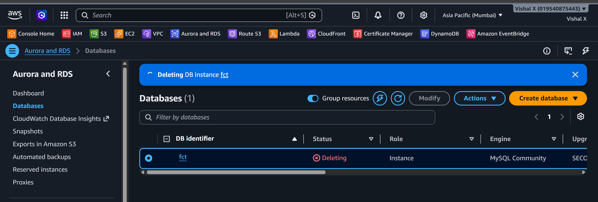

RDS Database
Sixth project. First time setting up a managed database on AWS. Wanted to see how RDS works compared to just installing MySQL on an EC2 instance.
What I built
A MySQL database on RDS inside a private subnet. No public access. Connected to it through an EC2 jump box in the same VPC.

Why RDS over MySQL on EC2
Running MySQL on EC2 means handling backups, patches, and restarts yourself. RDS takes care of all that. Costs a bit more but saves a lot of time.
Services used
| Service | What I used it for |
|---|---|
| RDS | Managed MySQL database |
| VPC | Network where the database lives |
| Subnets | Private subnets across two availability zones |
| Security Group | Controls which resources can reach the DB |
Resources I created
| Resource | Value |
|---|---|
| Region | ap-south-1 |
| DB Engine | MySQL 8.0 |
| Instance class | db.t3.micro (Free Tier) |
| DB name | fct |
| DB username | admin |
| DB endpoint | fct.c9u0wwe0km51.ap-south-1.rds.amazonaws.com |
| Security Group | rds-sg |
| Subnet Group | rds-subnet-group |
| Jump Box EC2 | t2.micro (public subnet) |
Steps
1. Opened RDS Console
Searched for RDS in the AWS Console and opened it.

2. Created a DB Subnet Group
RDS needs subnets in at least two AZs. Created a subnet group from my custom VPC subnets.
- Name:
rds-subnet-group - VPC: my custom VPC
- Added subnets from two different availability zones

3. Created a Security Group for RDS
Didn't want the database open to the internet. Created rds-sg and set the inbound rule to only allow the EC2 jump box.
| Type | Port | Source |
|---|---|---|
| MySQL/Aurora | 3306 | ec2-vpc-sg |
Used ec2-vpc-sg as the source — only the EC2 instance can reach the DB, nothing else.

4. Created the RDS Instance
- Engine: MySQL 8.0
- Template: Free tier
- Instance identifier:
fct - Username:
admin - Instance class: db.t3.micro
- Storage: 20 GiB gp2
- VPC: my custom VPC
- Subnet group:
rds-subnet-group - Public access: No
- Security group:
rds-sg

5. Waited for the database to become available
Took a few minutes to go from Creating to Available.

6. Copied the endpoint
Opened the database → Connectivity & security → copied the endpoint. That's the hostname used to connect.

7. Connected via EC2 jump box
RDS is in a private subnet so there's no way to connect directly from my laptop. Launched a small Ubuntu EC2 in the public subnet of the same VPC and SSH'd into it.
Installed the MySQL client on the jump box:
Tested port 3306 connectivity first:
Then tried connecting to RDS:
Got this error on the first attempt:
Fixed it by installing CA certificates:
Retried and it connected.

8. Ran test queries
SHOW DATABASES;
CREATE DATABASE testdb;
USE testdb;
CREATE TABLE users (
id INT AUTO_INCREMENT PRIMARY KEY,
name VARCHAR(100),
created_at TIMESTAMP DEFAULT CURRENT_TIMESTAMP
);
INSERT INTO users (name) VALUES ('test-user');
SELECT * FROM users;

9. Cleaned up
Deleted the RDS instance from the console — unchecked final snapshot since it was just a test. Then deleted the subnet group and security group.

Screenshots
| # | File | Description |
|---|---|---|
| 01 | screenshots/01-rds-console.png |
RDS Console |
| 02 | screenshots/02-subnet-group.png |
DB subnet group |
| 03 | screenshots/03-security-group.png |
RDS security group |
| 04 | screenshots/04-create-database.png |
Database creation form |
| 05 | screenshots/05-db-available.png |
Database available |
| 06 | screenshots/06-db-endpoint.png |
Database endpoint |
| 07 | screenshots/07-db-connection.png |
Connected via MySQL client |
| 08 | screenshots/08-test-queries.png |
Test queries result |
| 09 | screenshots/09-cleanup.png |
Cleanup done |
Commands
Things that can go wrong
| Problem | What caused it | How I fixed it |
|---|---|---|
| Can't connect to DB | Security group blocking port 3306 | Added ec2-vpc-sg as source in rds-sg |
| Can't connect to DB | Tried connecting directly from laptop | RDS is private — SSH into EC2 first |
| Connection timeout | Wrong endpoint | Copied the correct endpoint from RDS console |
| DB creation fails | No subnets in multiple AZs | Added subnets from two AZs to subnet group |
| SSL connection error | CA certificates missing on Ubuntu | sudo apt install ca-certificates -y then retry |
| MySQL client not found | Not installed on jump box | sudo apt install mysql-client -y |
Security notes
- Public access is off — RDS is not reachable from the internet
- Only the EC2 jump box (
ec2-vpc-sg) can connect on port 3306 - DB password is not documented or committed anywhere
- For production: use IAM database authentication instead of username/password
Cost
db.t3.micro is free tier eligible — 750 hours/month for 12 months. 20 GB storage is also free. RDS charges by the hour even when idle so always delete after testing.
What I learned
- How RDS differs from running MySQL on EC2
- What a DB subnet group is and why it needs multiple AZs
- Why public access should be off for databases
- How security groups work as the access control layer
- That Ubuntu needs
ca-certificatesinstalled for MySQL SSL to work - How to use an EC2 jump box to reach a private RDS instance